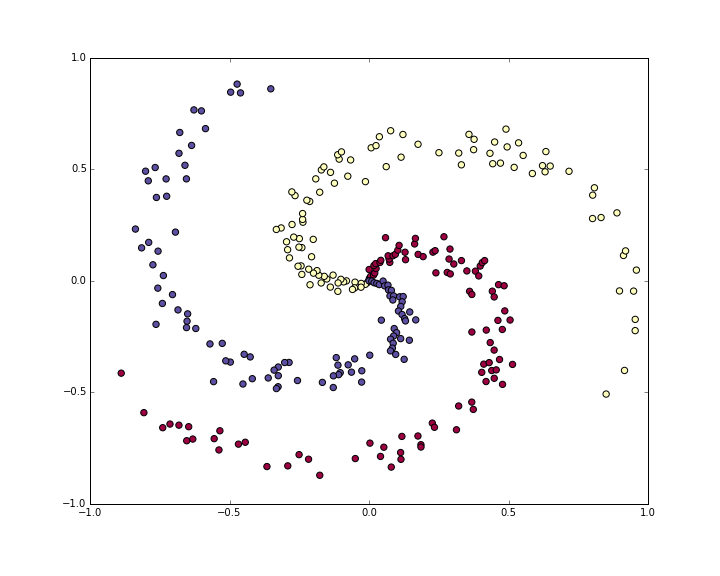
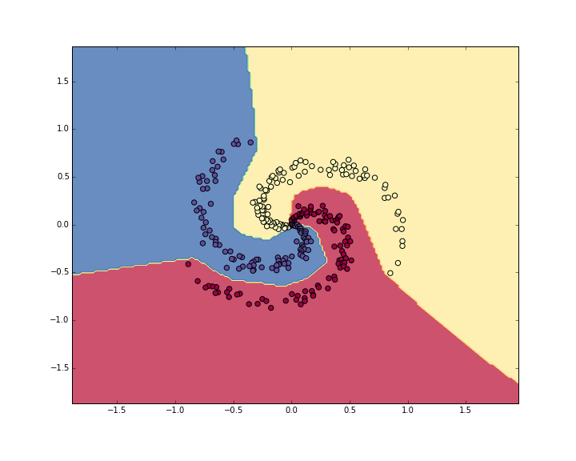

try:
# %tensorflow_version only exists in Colab.
%tensorflow_version 2.x
except Exception:
passLab4: Starting with Neural Networks
In this lab you will make your first Neural Networks for some classification or regression tasks.
Image Classification
In the set of this exercises we will be using tf.keras (a high-level API to build and train models in TensorFlow) and GoogleColab.
1. Open a new notebook in GoogleColab for python3. Run the following code for activating tensorflow version 2.0:
2. Import tensorflow, keras, numpy and matplot using the following code:
from __future__ import absolute_import , division , print_function , unicode_literals
# TensorFlow and tf.keras
import tensorflow as tf
from tensorflow import keras
# Helper libraries
import numpy as np
import matplotlib.pyplot as plt3. Check your tensorflow version using:
print(tf.__version__)The output should be 2. or higher.
4. Import the cifra10 data set. The CIFAR-10 dataset consists of 60000 32 × 32 colour images in 10 classes, with 6000 images per class. There are 50000 training images and 10000 test images: cifar10
data = keras.datasets.cifar10
cifar10_data = data.load_data()5. Before using a dataset, the datatype should be checked. Test type(cifar10 data) for verifying the variable type. len(cifar10 data) is another command for checking the data size.
6. Load train and test images and labels with:
(train_images , train_labels),(test_images , test_labels) =
cifar10_dataLoading the dataset returns four NumPy arrays:
The
train_imagesandtrain_labelsarrays are the training set, the data the model uses to learn.The model is tested against the test set, the
test_images, andtest_labelsarrays.
7. The images are 32 × 32 NumPy arrays, with pixel values ranging from 0 to 255. You can check an example with:
print(train_images[0])
print(train_images[0].shape)The labels are an array of integers, ranging from 0 to 9. Check it with your own code. Each image is mapped to a single label. Since the class names are not included with the dataset, store them here to use later when plotting the images: (check the dataset link for more detailed information: cifar)
class_names = [ 'airplane' , 'automobile' , 'bird' , 'cat' , 'deer' , 'dog' , 'frog' , 'horse' , 'ship' , 'truck']8. Before training the model, explore the datasets. Number of train and test points, their array size and etc.
9. An interesting fact about the image is that you can plot the image. It is possible using the following:
index = 8
plt.figure()
plt.imshow(train_images[index])
plt.colorbar()
plt.grid(False)
plt.show()
train_labels[index]10. To verify that the data is in the correct format and that you’re ready to build and train the network, let’s display the first 25 images from the training set and display the class name below each image. To do so use the following commands:
plt.subplot()
plt.xticks([])
plt.yticks([])
plt.imshow()
plt.xlabel()11. You can check various images by changing the index value, or by calling test_images. You can see that the pixel values fall in the range of 0 to 255. normalise train and test sets using the following code:
train_images = train_images / 255.0Building a neural network in general requires configuring the layers of the model, then compiling the model. The basic building block of a neural network is the layer. Layers extract representations from the data fed into them. Hopefully, these representations are meaningful for the problem at hand. Most of deep learning consists of chaining together simple layers. Most layers, such as tf.keras.layers.Dense, have parameters that are learned during training.
12. First neural network definition with three layers and two activation functions
model = keras.Sequential([
keras.layers.Flatten(input_shape=(32, 32, 3)),
keras.layers.Dense(128, activation=’relu’),
keras.layers.Dense(10, activation=’softmax’)])The first layer in this network, tf.keras.layers.Flatten, transforms the format of the images from a two-dimensional array (of 32 by 32 pixels) to a one- dimensional array (of 32 × 32 = 1024 pixels). Think of this layer as unstacking rows of pixels in the image and lining them up. This layer has no parameters to learn; it only reformats the data.
After the pixels are flattened, the network consists of a sequence of two tf.keras.layers.Dense layers. These are densely connected, or fully con- nected, neural layers. The first Dense layer has 128 nodes (or neurons). The second (and last) layer is a 10-node softmax layer that returns an array of 10 probability scores that sum to 1. Each node contains a score that indicates the probability that the current image belongs to one of the 10 classes. In this exercise, we don’t explain the reasons of defining a neural network with this structure. For defining a network compatible with our data, we should define an input layer with the same size as the input data (images size) and an output corresponding the out put data (image labels).
13. Before the model is ready for training, it needs a few more settings. These are added during the model’s compile step:
Loss function: This measures how accurate the model is during training. You want to minimize this function to ”steer” the model in the right direction.
Optimizer: This is how the model is updated based on the data it sees and its loss function.
Metrics: Used to monitor the training and testing steps. The following example uses accuracy, the fraction of the images that are correctly classified.
14. Training the neural network model requires the following steps:
Feed the training data to the model. In this example, the training data is in the train images and train labels arrays.
The model learns to associate images and labels.
You ask the model to make predictions about a test set, in this example, the test images array. Verify that the predictions match the labels from the test labels array.
model.compile(optimizer='adam',
loss='sparse_categorical_crossentropy',
metrics=['accuracy'])To start training, call the model.fit method, so called because it “fits” the model to the training data:
model.fit(train_images , train_labels , epochs=10)15. It is the moment for checking the model performance on the test dataset.
test_loss , test_acc = model.evaluate(test_images , test_labels ,
verbose =2)Check the test loss and accuracy in your code.
16. With the model trained, we can use it to make predictions about some images.
predictions = model.predict(test_images)The model predicts a label for each image in the testing set. Print the first, second and third element of the predicted test sets. You can see that each element contains 10 values indicating a probability of each label. Choose the maximum one using np.argmax() function. Compare the predicted label of the first three elements with their predicted labels. How many are correct?
17. Write a function for checking the predicted labels. The result should be similar to the Figure below with a label indicating the probability of the predicted label with blue color if the prediction is correct otherwise in the red color?

18. Grab a single element from the test set such as test_images[5]. Send it to the model.predict() and check what will happen. Why? Correct it by your modification. (hint: you can use expand_dims())
19. Respecting input and output sizes, try to change your model structure in exercises 12 and 13 and observe their affections on prediction precision.
Tip
You can choose another image classification dataset from Tensorflow available datasets https://www.tensorflow.org/datasets/catalog/overview and predict a classification function for it.
Sentiment Analysis
In this exercise, you’ll build a neural network using Keras to classify texts into ones with positive and negative sentiments; sentiment analysis.
Import the necessary Libraries
import numpy as np
from tensorflow.keras.utils import to_categorical
from tensorflow.keras import models
from tensorflow.keras import layers
from tensorflow.keras.datasets import imdb1. Load the IMDB dataset
(training_data, training_targets), (testing_data, testing_targets) = imdb.load_data(num_words=10000)
data = np.concatenate((training_data, testing_data), axis=0)
targets = np.concatenate((training_targets, testing_targets), axis=0)2. Take only the first 10000 words from each data sample. This reduces the size of our final model during training.
3. Build your Neural Network model
4. Compile your model
5. Fit your model, and get its final accuracy
Regression
In this exercise, you will create a regressor on the Boston housing Dataset, a task that you’ve previously accomplished using linear regression and decision trees. only this time, you’ll accomplish it using Keras neural networks.
Import the Boston Housing dataset.
1. Visualize each feature and label in your data using a scatterplot. This will help in finding which features, if any, contain outliers. It will also assist in finding potential strong correlations between features.
2. Split your data into training and testing
3. Normalize your training and testing subsets
4. Build your keras neural network model. Create a Sequential model, and make it only with 3 layers: an input (Dense) layer with 128 neurons, a hidden (Dense) layer with 64 neurons, both using a ReLU (Rectified Linear Unit) activation function, and a dense layer with a linear activation will be used as output layer.
from keras.models import Sequential
from keras.layers import Dense
#model =5. Compile your model and view its summary.
To compile your model, use the adam opimizer, and the mse (mean-squared-error) loss function, and the mae (mean average error) metric to report its performance.
model.compile(optimizer='adam', loss='mse', metrics=['mae'])
model.summary()6. Train your model
7. Evaluate your model using model.evaluate
mse_nn, mae_nn = model.evaluate(X_test, y_test)
print('Mean squared error on test data: ', mse_nn)
print('Mean absolute error on test data: ', mae_nn)8. Compare your model’s performance vs that of an sklearn Linear Regression model
Case study
This case study is from this course.
Table of Contents:
In this section we’ll walk through a complete implementation of a toy Neural Network in 2 dimensions. We’ll first implement a simple linear classifier and then extend the code to a 2-layer Neural Network. As we’ll see, this extension is surprisingly simple and very few changes are necessary.
Generating some data
Lets generate a classification dataset that is not easily linearly separable. Our favorite example is the spiral dataset, which can be generated as follows:
N = 100 # number of points per class
D = 2 # dimensionality
K = 3 # number of classes
X = np.zeros((N*K,D)) # data matrix (each row = single example)
y = np.zeros(N*K, dtype='uint8') # class labels
for j in range(K):
ix = range(N*j,N*(j+1))
r = np.linspace(0.0,1,N) # radius
t = np.linspace(j*4,(j+1)*4,N) + np.random.randn(N)*0.2 # theta
X[ix] = np.c_[r*np.sin(t), r*np.cos(t)]
y[ix] = j
# lets visualize the data:
plt.scatter(X[:, 0], X[:, 1], c=y, s=40, cmap=plt.cm.Spectral)
plt.show()

The toy spiral data consists of three classes (blue, red, yellow) that are not linearly separable.Normally we would want to preprocess the dataset so that each feature has zero mean and unit standard deviation, but in this case the features are already in a nice range from -1 to 1, so we skip this step.
Training a Softmax Linear Classifier
Initialize the parameters
Lets first train a Softmax classifier on this classification dataset. As we saw in the previous sections, the Softmax classifier has a linear score function and uses the cross-entropy loss. The parameters of the linear classifier consist of a weight matrix W and a bias vector b for each class. Lets first initialize these parameters to be random numbers:
# initialize parameters randomly
W = 0.01 * np.random.randn(D,K)
b = np.zeros((1,K))Recall that we D = 2 is the dimensionality and K = 3 is the number of classes.
Compute the class scores
Since this is a linear classifier, we can compute all class scores very simply in parallel with a single matrix multiplication:
# compute class scores for a linear classifier
scores = np.dot(X, W) + bIn this example we have 300 2-D points, so after this multiplication the array scores will have size [300 x 3], where each row gives the class scores corresponding to the 3 classes (blue, red, yellow).
Compute the loss
The second key ingredient we need is a loss function, which is a differentiable objective that quantifies our unhappiness with the computed class scores. Intuitively, we want the correct class to have a higher score than the other classes. When this is the case, the loss should be low and otherwise the loss should be high. There are many ways to quantify this intuition, but in this example lets use the cross-entropy loss that is associated with the Softmax classifier. Recall that if \(f\) is the array of class scores for a single example (e.g. array of 3 numbers here), then the Softmax classifier computes the loss for that example as:
\[ L_i = -\log\left(\frac{e^{f_{y_i}}}{ \sum_j e^{f_j} }\right) \]
We can see that the Softmax classifier interprets every element of \(f\) as holding the (unnormalized) log probabilities of the three classes. We exponentiate these to get (unnormalized) probabilities, and then normalize them to get probabilites. Therefore, the expression inside the log is the normalized probability of the correct class. Note how this expression works: this quantity is always between 0 and 1. When the probability of the correct class is very small (near 0), the loss will go towards (positive) infinity. Conversely, when the correct class probability goes towards 1, the loss will go towards zero because \(log(1) = 0\). Hence, the expression for \(L_i\) is low when the correct class probability is high, and it’s very high when it is low.
Recall also that the full Softmax classifier loss is then defined as the average cross-entropy loss over the training examples and the regularization:
\[ L = \underbrace{ \frac{1}{N} \sum_i L_i }_\text{data loss} + \underbrace{ \frac{1}{2} \lambda \sum_k\sum_l W_{k,l}^2 }_\text{regularization loss} \\\\ \]
Given the array of scores we’ve computed above, we can compute the loss. First, the way to obtain the probabilities is straight forward:
num_examples = X.shape[0]
# get unnormalized probabilities
exp_scores = np.exp(scores)
# normalize them for each example
probs = exp_scores / np.sum(exp_scores, axis=1, keepdims=True)We now have an array probs of size [300 x 3], where each row now contains the class probabilities. In particular, since we’ve normalized them every row now sums to one. We can now query for the log probabilities assigned to the correct classes in each example:
correct_logprobs = -np.log(probs[range(num_examples),y])The array correct_logprobs is a 1D array of just the probabilities assigned to the correct classes for each example. The full loss is then the average of these log probabilities and the regularization loss:
# compute the loss: average cross-entropy loss and regularization
data_loss = np.sum(correct_logprobs)/num_examples
reg_loss = 0.5*reg*np.sum(W*W)
loss = data_loss + reg_lossIn this code, the regularization strength \(\) is stored inside the reg. The convenience factor of 0.5 multiplying the regularization will become clear in a second. Evaluating this in the beginning (with random parameters) might give us loss = 1.1, which is -np.log(1.0/3), since with small initial random weights all probabilities assigned to all classes are about one third. We now want to make the loss as low as possible, with loss = 0 as the absolute lower bound. But the lower the loss is, the higher are the probabilities assigned to the correct classes for all examples.
Computing the Analytic Gradient with Backpropagation
We have a way of evaluating the loss, and now we have to minimize it. We’ll do so with gradient descent. That is, we start with random parameters (as shown above), and evaluate the gradient of the loss function with respect to the parameters, so that we know how we should change the parameters to decrease the loss. Lets introduce the intermediate variable \(p\), which is a vector of the (normalized) probabilities. The loss for one example is:
\[ p_k = \frac{e^{f_k}}{ \sum_j e^{f_j} } \hspace{1in} L_i =-\log\left(p_{y_i}\right) \]
We now wish to understand how the computed scores inside \(f\) should change to decrease the loss \(L_i\) that this example contributes to the full objective. In other words, we want to derive the gradient \( L_i / f_k \). The loss \(L_i\) is computed from \(p\), which in turn depends on \(f\). It’s a fun exercise to the reader to use the chain rule to derive the gradient, but it turns out to be extremely simple and interpretible in the end, after a lot of things cancel out:
\[ \frac{\partial L_i }{ \partial f_k } = p_k - \mathbb{1}(y_i = k) \]
Notice how elegant and simple this expression is. Suppose the probabilities we computed were p = [0.2, 0.3, 0.5], and that the correct class was the middle one (with probability 0.3). According to this derivation the gradient on the scores would be df = [0.2, -0.7, 0.5]. Recalling what the interpretation of the gradient, we see that this result is highly intuitive: increasing the first or last element of the score vector f (the scores of the incorrect classes) leads to an increased loss (due to the positive signs +0.2 and +0.5) - and increasing the loss is bad, as expected. However, increasing the score of the correct class has negative influence on the loss. The gradient of -0.7 is telling us that increasing the correct class score would lead to a decrease of the loss \(L_i\), which makes sense.
All of this boils down to the following code. Recall that probs stores the probabilities of all classes (as rows) for each example. To get the gradient on the scores, which we call dscores, we proceed as follows:
dscores = probs
dscores[range(num_examples),y] -= 1
dscores /= num_examplesLastly, we had that scores = np.dot(X, W) + b, so armed with the gradient on scores (stored in dscores), we can now backpropagate into W and b:
dW = np.dot(X.T, dscores)
db = np.sum(dscores, axis=0, keepdims=True)
dW += reg*W # don't forget the regularization gradientWhere we see that we have backpropped through the matrix multiply operation, and also added the contribution from the regularization. Note that the regularization gradient has the very simple form reg*W since we used the constant 0.5 for its loss contribution (i.e. \( ( w^2) = w\). This is a common convenience trick that simplifies the gradient expression.
Performing a parameter update
Now that we’ve evaluated the gradient we know how every parameter influences the loss function. We will now perform a parameter update in the negative gradient direction to decrease the loss:
# perform a parameter update
W += -step_size * dW
b += -step_size * dbPutting it all together: Training a Softmax Classifier
Putting all of this together, here is the full code for training a Softmax classifier with Gradient descent:
#Train a Linear Classifier
# initialize parameters randomly
W = 0.01 * np.random.randn(D,K)
b = np.zeros((1,K))
# some hyperparameters
step_size = 1e-0
reg = 1e-3 # regularization strength
# gradient descent loop
num_examples = X.shape[0]
for i in range(200):
# evaluate class scores, [N x K]
scores = np.dot(X, W) + b
# compute the class probabilities
exp_scores = np.exp(scores)
probs = exp_scores / np.sum(exp_scores, axis=1, keepdims=True) # [N x K]
# compute the loss: average cross-entropy loss and regularization
correct_logprobs = -np.log(probs[range(num_examples),y])
data_loss = np.sum(correct_logprobs)/num_examples
reg_loss = 0.5*reg*np.sum(W*W)
loss = data_loss + reg_loss
if i % 10 == 0:
print "iteration %d: loss %f" % (i, loss)
# compute the gradient on scores
dscores = probs
dscores[range(num_examples),y] -= 1
dscores /= num_examples
# backpropate the gradient to the parameters (W,b)
dW = np.dot(X.T, dscores)
db = np.sum(dscores, axis=0, keepdims=True)
dW += reg*W # regularization gradient
# perform a parameter update
W += -step_size * dW
b += -step_size * dbRunning this prints the output:
iteration 0: loss 1.096956
iteration 10: loss 0.917265
iteration 20: loss 0.851503
iteration 30: loss 0.822336
iteration 40: loss 0.807586
iteration 50: loss 0.799448
iteration 60: loss 0.794681
iteration 70: loss 0.791764
iteration 80: loss 0.789920
iteration 90: loss 0.788726
iteration 100: loss 0.787938
iteration 110: loss 0.787409
iteration 120: loss 0.787049
iteration 130: loss 0.786803
iteration 140: loss 0.786633
iteration 150: loss 0.786514
iteration 160: loss 0.786431
iteration 170: loss 0.786373
iteration 180: loss 0.786331
iteration 190: loss 0.786302We see that we’ve converged to something after about 190 iterations. We can evaluate the training set accuracy:
# evaluate training set accuracy
scores = np.dot(X, W) + b
predicted_class = np.argmax(scores, axis=1)
print 'training accuracy: %.2f' % (np.mean(predicted_class == y))This prints 49%. Not very good at all, but also not surprising given that the dataset is constructed so it is not linearly separable. We can also plot the learned decision boundaries:

Linear classifier fails to learn the toy spiral dataset.Training a Neural Network
Clearly, a linear classifier is inadequate for this dataset and we would like to use a Neural Network. One additional hidden layer will suffice for this toy data. We will now need two sets of weights and biases (for the first and second layers):
# initialize parameters randomly
h = 100 # size of hidden layer
W = 0.01 * np.random.randn(D,h)
b = np.zeros((1,h))
W2 = 0.01 * np.random.randn(h,K)
b2 = np.zeros((1,K))The forward pass to compute scores now changes form:
# evaluate class scores with a 2-layer Neural Network
hidden_layer = np.maximum(0, np.dot(X, W) + b) # note, ReLU activation
scores = np.dot(hidden_layer, W2) + b2Notice that the only change from before is one extra line of code, where we first compute the hidden layer representation and then the scores based on this hidden layer. Crucially, we’ve also added a non-linearity, which in this case is simple ReLU that thresholds the activations on the hidden layer at zero.
Everything else remains the same. We compute the loss based on the scores exactly as before, and get the gradient for the scores dscores exactly as before. However, the way we backpropagate that gradient into the model parameters now changes form, of course. First lets backpropagate the second layer of the Neural Network. This looks identical to the code we had for the Softmax classifier, except we’re replacing X (the raw data), with the variable hidden_layer):
# backpropate the gradient to the parameters
# first backprop into parameters W2 and b2
dW2 = np.dot(hidden_layer.T, dscores)
db2 = np.sum(dscores, axis=0, keepdims=True)However, unlike before we are not yet done, because hidden_layer is itself a function of other parameters and the data! We need to continue backpropagation through this variable. Its gradient can be computed as:
dhidden = np.dot(dscores, W2.T)Now we have the gradient on the outputs of the hidden layer. Next, we have to backpropagate the ReLU non-linearity. This turns out to be easy because ReLU during the backward pass is effectively a switch. Since \(r = max(0, x)\), we have that \( = 1(x > 0) \). Combined with the chain rule, we see that the ReLU unit lets the gradient pass through unchanged if its input was greater than 0, but kills it if its input was less than zero during the forward pass. Hence, we can backpropagate the ReLU in place simply with:
# backprop the ReLU non-linearity
dhidden[hidden_layer <= 0] = 0And now we finally continue to the first layer weights and biases:
# finally into W,b
dW = np.dot(X.T, dhidden)
db = np.sum(dhidden, axis=0, keepdims=True)We’re done! We have the gradients dW,db,dW2,db2 and can perform the parameter update. Everything else remains unchanged. The full code looks very similar:
# initialize parameters randomly
h = 100 # size of hidden layer
W = 0.01 * np.random.randn(D,h)
b = np.zeros((1,h))
W2 = 0.01 * np.random.randn(h,K)
b2 = np.zeros((1,K))
# some hyperparameters
step_size = 1e-0
reg = 1e-3 # regularization strength
# gradient descent loop
num_examples = X.shape[0]
for i in range(10000):
# evaluate class scores, [N x K]
hidden_layer = np.maximum(0, np.dot(X, W) + b) # note, ReLU activation
scores = np.dot(hidden_layer, W2) + b2
# compute the class probabilities
exp_scores = np.exp(scores)
probs = exp_scores / np.sum(exp_scores, axis=1, keepdims=True) # [N x K]
# compute the loss: average cross-entropy loss and regularization
correct_logprobs = -np.log(probs[range(num_examples),y])
data_loss = np.sum(correct_logprobs)/num_examples
reg_loss = 0.5*reg*np.sum(W*W) + 0.5*reg*np.sum(W2*W2)
loss = data_loss + reg_loss
if i % 1000 == 0:
print "iteration %d: loss %f" % (i, loss)
# compute the gradient on scores
dscores = probs
dscores[range(num_examples),y] -= 1
dscores /= num_examples
# backpropate the gradient to the parameters
# first backprop into parameters W2 and b2
dW2 = np.dot(hidden_layer.T, dscores)
db2 = np.sum(dscores, axis=0, keepdims=True)
# next backprop into hidden layer
dhidden = np.dot(dscores, W2.T)
# backprop the ReLU non-linearity
dhidden[hidden_layer <= 0] = 0
# finally into W,b
dW = np.dot(X.T, dhidden)
db = np.sum(dhidden, axis=0, keepdims=True)
# add regularization gradient contribution
dW2 += reg * W2
dW += reg * W
# perform a parameter update
W += -step_size * dW
b += -step_size * db
W2 += -step_size * dW2
b2 += -step_size * db2This prints:
iteration 0: loss 1.098744
iteration 1000: loss 0.294946
iteration 2000: loss 0.259301
iteration 3000: loss 0.248310
iteration 4000: loss 0.246170
iteration 5000: loss 0.245649
iteration 6000: loss 0.245491
iteration 7000: loss 0.245400
iteration 8000: loss 0.245335
iteration 9000: loss 0.245292The training accuracy is now:
# evaluate training set accuracy
hidden_layer = np.maximum(0, np.dot(X, W) + b)
scores = np.dot(hidden_layer, W2) + b2
predicted_class = np.argmax(scores, axis=1)
print 'training accuracy: %.2f' % (np.mean(predicted_class == y))Which prints 98%!. We can also visualize the decision boundaries:

Neural Network classifier crushes the spiral dataset.Summary
We’ve worked with a toy 2D dataset and trained both a linear network and a 2-layer Neural Network. We saw that the change from a linear classifier to a Neural Network involves very few changes in the code. The score function changes its form (1 line of code difference), and the backpropagation changes its form (we have to perform one more round of backprop through the hidden layer to the first layer of the network).